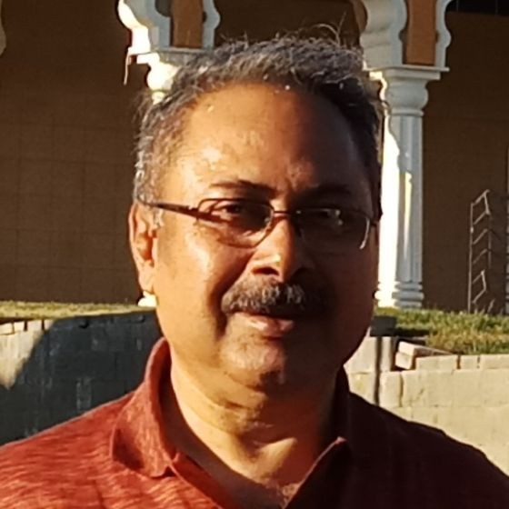
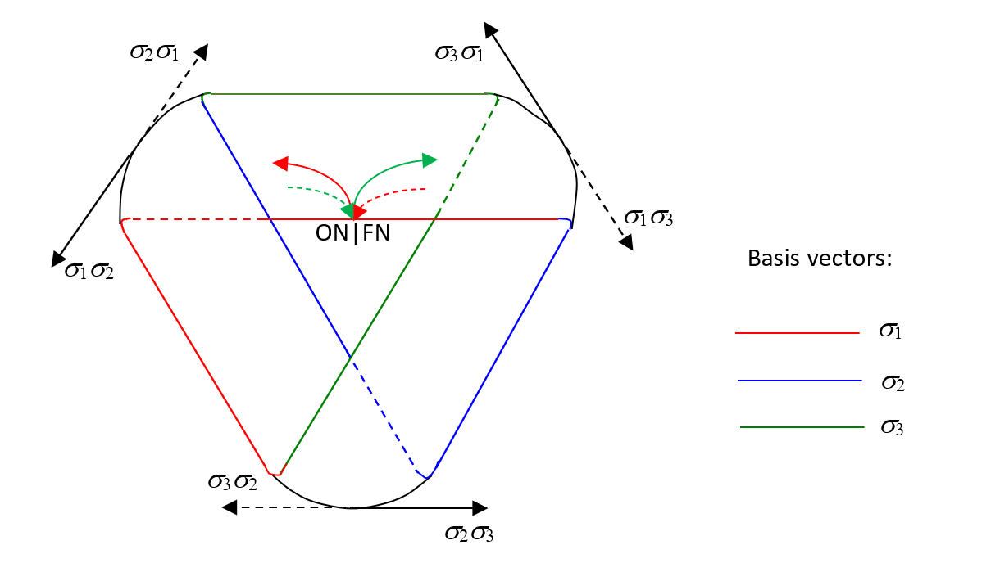

Since the memorable past I am subtly driven by a quest towards the origin of us and unified network of our 'Universal Existence.' After completion of higher secondary level of education, I continued my further study in Engineering at Jadavpur University; completing 1st year in Mechanical Engineering. Circumstantially, I changed that stream and followed my educational path in Medical Science. In my post graduate study, I chose the branch Orthopaedic Surgery that is principally based on Biomechanics that fits with my initial technological trend.
In my professional life as Orthopaedic Surgeon I initially served Public and Private hospitals and finally worked in a Government hospital for seventeen years. Presently I am doing private consultation practice in Orthopaedic Surgery in Siliguri.
Along with the academic and professional journey I continued self-education in my leisure times. I studied higher mathematics and physics, giving priority to grasping relevant topics more conceptually rather than following an institutional syllabus. Approximately since the year 2000 I started working on a Theoretical Model: 'A Hypothetical Cognitive Model', based on topological origami. The work is highlighted as 'Complex Möbius Field' and has been exposed through six International Publications.
In between, I participated in an International Workshop with my presentation 'A New Proposition in Gait Analysis' in the 'International Workshop on Complex Dynamics of Physiological Systems: from Heart to Brain,' organised by the Department of Physics, Presidency College, Kolkata — February 12–14, 2007.
My study in medical science helped extend my further interest in understanding complex dynamics of living systems, and my experience in Orthopaedic Surgery incited my interest in complex analysis underlying systemic dynamism. Curiously this journey explores some new basic operators — e.g., untwistor, unspinor, windlass — that complementarily fit the modular design of this cognitive model.
Even though being an introvert, I enjoy the experiences of diverse facets of life. I feel fortunate to have gone through several spiritual courses based on Yoga, Meditation, Pranayama and Sudarshan Kriya, organized by the Art of Living foundation, which I honour as my lifetime experience. My sincere pranam to Pujya Guruji, Sri Sri Ravi Shankarji, founder of AOL.
Based on this work, one may believe that sooner or later science will come out partially from its reductionist or visionary (rational) approach and adopt a comprehensive approach incorporating feeling (irrational) as a stronger complementary half, where Consciousness can be properly dealt with sufficient predictability on subjective experiment also.
Complex Möbius field ($CMF$) may be demonstrated as a hypothetical cognitive model based on rotational invariance, Finite Rotational Constant, in Möbius topology. All the statements and inferences drawn in the work are based on symmetry principles, group functions, number system and geometric algebra along the self-organization of $CMF$. One may propose this as the fundamental approach in the study of ultimate science of consciousness. Self-organization demands point ended strip without hole i.e., topologically equivalent simply to a sphere or an open disk. In one closed sensory and one open motor Möbius strip, together in helical polar axis, they stand as the basic complementary topology of macro to micro self-organization (Energy Dynamical System: $ED$) and micro to Macro self-organization (Finite Dynamical System: $FD$), respectively.
In $ED$ and $FD$ alternately the phases of pulsation in Bosonic Null ($BN$) i.e., 0-Dimensional (0D or Dimensionality) phase pulsate. Here two journeys converge simultaneously in exclusive individual ascend of equatorial journey from sensory Bosonic Null ($BN$s) locality toward motor Bosonic Null ($BNm$) locality. This is conjugate BN path, $N$ to $N+1$ – micro to Macro hierarchy along intrinsic mass ($IM$) of subsystem. The individual journey may get centralized in Universal event under absolute nonstimulation. Classico($Cl$)-quantum($q$) measurement is still snap mode. Highest infinite P/AP is incorporated at $BN$s as structured past (Macro to micro self- organization).
Numbers are placed in Möbius topology on the principle of aesthetic fitment of configural Möbius symbols $\left(+^Q , -^C , +^C , -^Q , 0^C , 0^Q , 0 \text{ and } \infty \right)$. Middle subelement of trinary codon is media that symbolize dynamism: '$+$' position, forward without Null; '$-$' momentum, backward within Null; '$0$' absolutely neutralized dynamism in the form of nontrivial '$0$'.
Basis vectors $\left(\sigma_1, \sigma_2, \sigma_3\right)$ are edges of central open angle triangular doughnut of motor wing (Odd or pointed 3D strip on the background of Even or flat 4D one). Motor wing decodes all encoded quaternion information (in Re $+ i + j + k$ format) out of sensory wing by these discrete basis vectors and stores them cumulatively back as quaternion update. Complex Möbius Field thus validates unification of all fields including the Null field — the structureless and formless Dynamic Euclidean Field — under topological algorithm.

Complex Möbius field ($CMF$) may be demonstrated as a self-organized hypothetical cognitive model based on Möbius topology. This happens along group (additive and multiplicative) association (sensory and motor) and symmetry rules (ED and FD) on complex Möbius functions. Macroscopic Quantum System ($MQS$) exists in finite sensory locality (Macro to micro hierarchy) only as a by-product if supported by diffeomorphic, but on, absolute motor locality (micro to Macro hierarchy from tuning microtubular electron in MQS to whole Universe) in equatorial zone satisfying 'finite rotational constant' (FRC). The motor wing along with polar axis represents the structureless and formless dynamic Euclidean field. CMF is basically a self-organizing mathematical field. Only two kinds of basic particles — fundamental neutrino and tachyon — play behind this central unitarity and peripheral duality that create diverse universal scenario; the rest are composite particles, fermions: electron group and quark group.
No other system is ever complete as the number system. Numbers are placed in Möbius topology on the principle of aesthetic fitment of configural Möbius symbols $\left(+^Q , -^C , +^C , -^Q , 0^C , 0^Q , 0 \text{ and } \infty \right)$. Irrationals (INS) are incorporated CNS in 3D: white gauze bosons (hcINS) within black gravity bosons — static (rational/RNS) and pure kinetic (tcINS) — where central grey bosons satisfy orthonormality (C-symmetry) between the above two.
In Möbius topology odd 3D on even 2D/4D curiously build a clear foundation of geometric algebra both illustratively and functionally. Basis vectors $\left(\sigma_1, \sigma_2, \sigma_3\right)$ readily perceive on decode sensor inputs at diffeomorphic motor wing and help encode and store track-parameters as quaternion in Re $+ i + j + k$ format. Complex Möbius Field has the potential to unify all five fundamental fields including the Null field — the potential dynamic Euclidean field — topologically.
So here one may face new terminologies, new understandings, and new concepts. Presentation of this holistic, complex and manifold nonlinearity seems futile to put down in the structure of conventional manuscript. Here, current discussions often demand instant clarification with illustration on very remote but related themes. In lieu of it, slides and modified poster-type presentation stand more suitable as modes of communication.